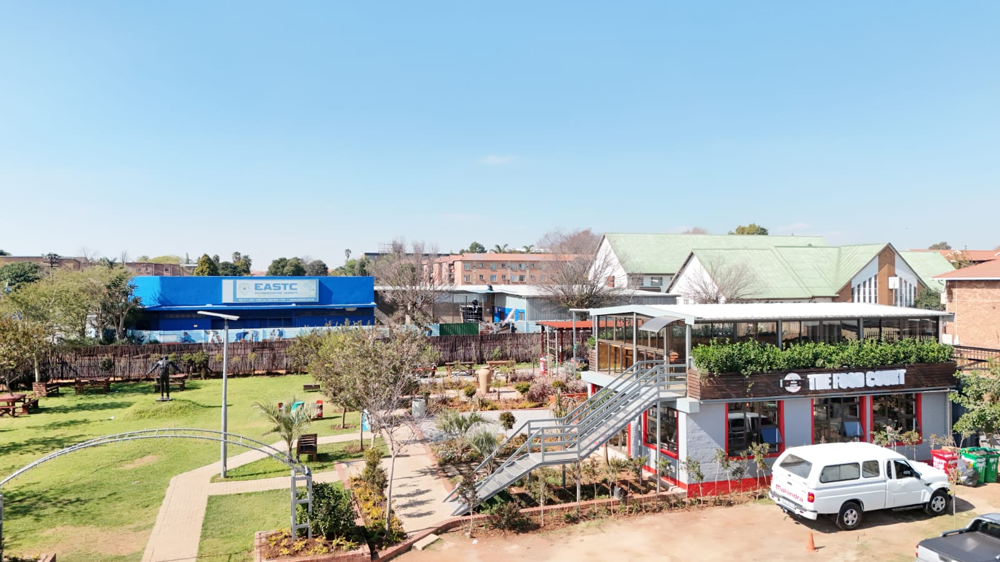
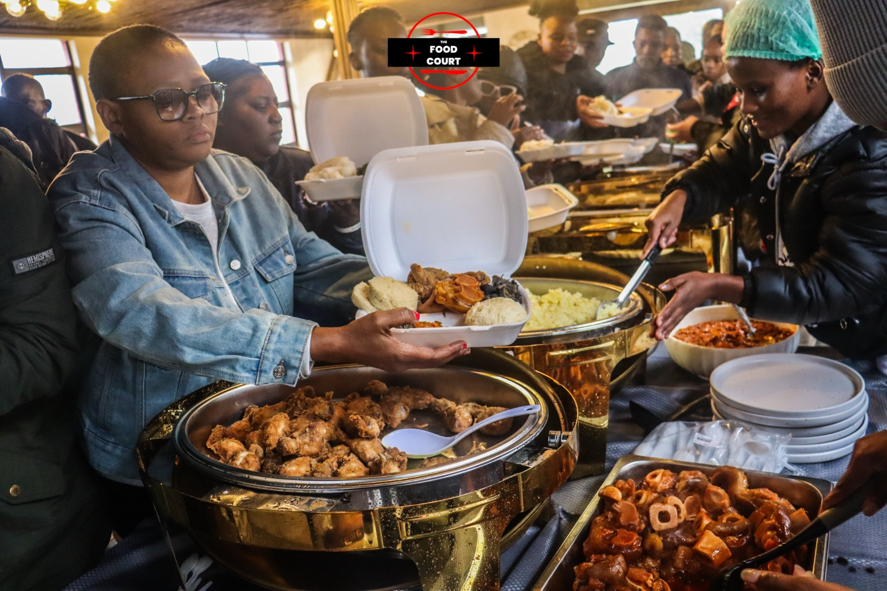

Artisanal College
- Short skill courses
- Learnerships & apprenticeships
- ARPL & trade test centre
- Custom programmes
From Grade R to trade test, NATED, and degrees — plus Foundation and The Food Court on the same campus. Scroll the structure from the Mini A5 profile.
Four education entities under the holding company. Foundation NPC and The Food Court sit on the same Maxwell Street campus.

Grade R–12 CAPS
Trades & trade tests
N3–N6
HCert & degrees

Scholarships & CSI

Daily meals & specials
43 Maxwell Street, Kempton Park · 011 394 1488 · 082 605 1134 · queries@eastc.co.za · DHET 2019/FE07/D33